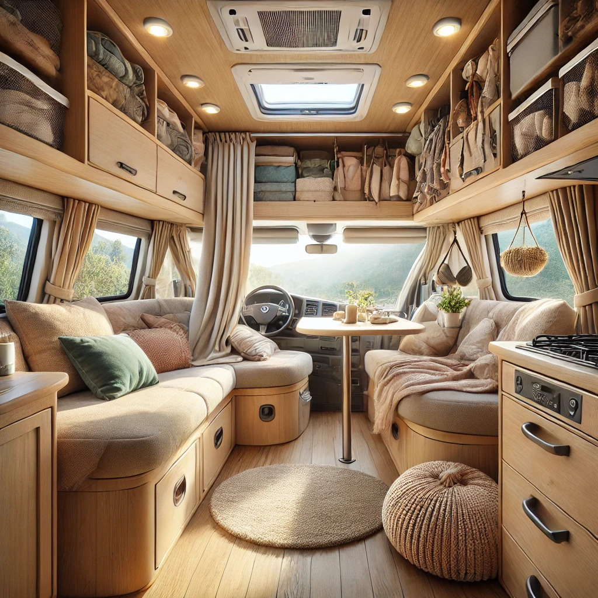

Un bon voyage en camping-car, ça commence toujours par une petite vérification du véhicule et quelques astuces sous la main. On ne pense pas toujours à tout, mais chaque petit détail peut faire la différence ! Il faut être un peu bricoleur, mais pas de panique : il y a toujours une solution, et souvent une bonne anecdote à raconter ensuite !
Après chaque aventure, on ajoute toujours un petit truc en plus, inspiré des rencontres sur la route avec d'autres camping-caristes pleins de bons conseils. Et quand l’hiver arrive, on prend soin de son fidèle compagnon en le mettant à l’hivernage, histoire qu’il soit prêt à repartir dès les beaux jours !
Voici quelques astuces pratiques pour voyager en camping-car :
Entretien et préparation :
- Vérifiez les niveaux (huile, liquide de refroidissement, eau propre, etc.) avant chaque départ.
- Gonflez bien les pneus et contrôlez leur état régulièrement.
- Prévoyez un kit de réparation (fusibles, ampoules, ruban adhésif, outillage de base).
- Les vignettes crit'air
Gestion de l’eau et de l’énergie :
- Économisez l’eau en utilisant un pulvérisateur pour la vaisselle et en prenant des douches rapides.
- Rechargez les batteries en roulant ou avec un panneau solaire.
- Privilégiez des appareils basse consommation (LED, chargeurs USB 12V).
Cuisine et stockage :
- Optez pour des aliments faciles à conserver (pâtes, conserves, riz).
- Utilisez des épices en petits pots aimantés pour gagner de la place.
- Préparez des plats à l’avance pour éviter trop de cuisine sur la route.
- Prévois des plats à un seul ustensile (poêlées, one-pot pasta).
- Garde une réserve de pain de mie qui se conserve mieux que la baguette.
- Utilise un autocuiseur pour cuisiner plus vite et économiser le gaz.
Stationnement et bivouac :
- Évitez les endroits trop isolés pour la sécurité.
- Utilisez des applications comme (Park4Night, i-Camping car, ...) pour trouver des aires adaptées.
- Ayez toujours une solution de repli en cas d’imprévu.
Confort et organisation :
- Investissez dans des rideaux thermiques pour mieux isoler en été comme en hiver.
- Utilisez des boîtes empilables pour optimiser les rangements.
- Ayez une trousse de secours bien équipée pour les petits bobos.

Optimisation du véhicule :
- Installe une caméra de recul pour faciliter les manœuvres.
- Ajoute des suspensions pneumatiques pour un meilleur confort sur route.
- Fixe des crochets et filets de rangement pour éviter que tout ne bouge en roulant.
- Utilise des tapis antidérapants dans les placards pour éviter que la vaisselle ne glisse.
Autonomie et énergie :
- Installe un panneau solaire pour recharger les batteries sans être branché.
- Adopte une multiprise 12V pour recharger plusieurs appareils en même temps.
- Stocke de l’eau potable dans des jerricans en plus du réservoir.
Améliorer son confort :
- Ajoute un ventilateur 12V pour rafraîchir la nuit en été.
- Investis dans un bon matelas si celui d’origine est trop dur.
- Utilise des sacs de rangement sous vide pour gagner de la place.
- Prends un hamac pour te détendre à l’extérieur.
Voyager en toute sérénité :
- Photographie tes documents importants pour les avoir en cas de perte.
- Prends une carte papier en plus du GPS, au cas où il y aurait une panne.
- Aie un plan B pour l’itinéraire en cas d’imprévus (route barrée, météo, etc.).
Petits trucs pour entretenir ton camping-car :
- Frotte un oignon sur ton pare-brise avant un trajet sous la pluie : ça aide l’eau à perler et améliore la visibilité.
- Mets du talc sur les joints en caoutchouc des portes et fenêtres pour éviter qu’ils ne collent par temps chaud.
- Utilise du WD-40 sur les moustiquaires pour qu’elles glissent mieux et restent propres plus longtemps.
- Colle un morceau de Velcro sur la télécommande et sur le mur pour éviter de la chercher partout.
Cuisine et organisation malignes :
- Congèle des bouteilles d’eau avant le départ : elles garderont le frigo au frais sans consommer d’énergie et donneront de l’eau fraîche en fondant.
- Emballe les fruits et légumes dans du papier journal pour les conserver plus longtemps.
- Utilise un égouttoir suspendu (comme ceux pour la vaisselle) pour économiser de l’espace sur le plan de travail.
- Prépare des glaçons de café ou de citron pour rafraîchir tes boissons sans les diluer.
Eau et propreté : des astuces qui changent tout :
- Mets une goutte d’huile essentielle de menthe ou d’eucalyptus dans le réservoir d’eaux grises pour éviter les mauvaises odeurs.
- Lave tes cheveux avec de l’eau vinaigrée si tu voyages dans des zones où l’eau est très calcaire (adoucit et démêle en même temps).
- Utilise du savon noir liquide pour tout nettoyer (vaisselle, douche, sol, toilettes).
- Garde un vieux bidon d’eau coupé en deux pour en faire un bac à lessive improvisé.
- Mets une serviette microfibre devant la porte pour éviter que la saleté ne rentre.
- Verse un peu de vinaigre blanc dans le réservoir d’eau propre une fois par mois pour éviter les dépôts de calcaire.
- Lave ta vaisselle avec du sable ou du marc de café si tu es en pleine nature et sans eau.
Petits trucs pour les longues routes :
- Stocke des bonbons au gingembre pour éviter le mal des transports.
- Fixe un porte-téléphone sur le tableau de bord pour utiliser le GPS sans galère.
- Fais des pauses toutes les 2 heures et marche un peu pour éviter les jambes lourdes.
- Prépare un sac spécial "accès rapide" avec de l’eau, des lingettes et un en-cas pour ne pas fouiller partout en roulant.
Pendant votre voyage, n'hésitez pas à allez voir aussi le site France Passion www.france-passion.com. Il propose des endroits accueillant et gratuit chez des exploitants agricoles, viticulteurs, producteurs fermiers, table d’hôtes…
Des étapes intéressant lors de vos itinéraire en France. En adhérant à leurs programmes, vous recevez un guide annuel et une vignette qui donne accès à plus de 2 000 étapes à travers le pays.
C'est une bonne solution pour découvrir des coins authentiques, rencontrer des producteurs et déguster des produits locaux. En échange, il est recommandé de respecter les lieux et d’éventuellement acheter des produits chez l’hôte, mais ce n’est pas une obligation.
Loin des aires de stationnement classique et des emplacements en pleine nature. Une seule nuit maximum.Aucun service (eau, électricité, vidange), ce n'est pas une aire aménagée.Engagement à respecter l’hôte et l’environnement